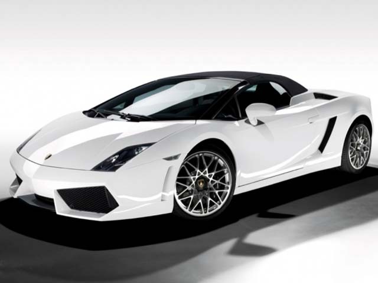

1966年3月日内瓦车展，达拉瑞和甘迪尼的大作P400 Miura登台，Miura通常被翻译为“缪拉”或“穆拉”。Miura的车身分为三段，车身前罩、座舱、后发动机罩，前后两部分可以掀开，内部机械完全暴露于外。整体看来，Miura车型具有强烈的攻击型，在现在看来依然兰博基尼Miura不觉过时。Miura在造型上和90年代流行过的美国克莱斯勒蝰蛇超级跑车神似。Miura车身很低，全高只有1050毫米，双座双门，车长却有4370毫米。Miura座舱全部玻璃包围，很有轰炸机味道。侧面看去，前后通过音波线连接，侧窗底部正是音波线的波谷。后发动机罩通过斜面与顶棚相接。前后罩面与座舱接连方式的不同再度把“生猛”二字强加于前车身。Miura还有不完善的地方，意大利发动机噪声是世界闻名的。有人美其名“性感的吼声”，虽然赛车手不会介意这些小节，但是那些肯花巨资购买跑车的人必然是有地位的人，他们是决不会忍受隆隆作响的发动机噪声。华莱士成立专门小组来解决这一问题，发动机与座舱之间布置了特殊玻璃材料的隔绝层，为了冷却发动机，Miura发动机用塑胶物质包裹，后发动机罩黑色的水平隔栅对于排热也起到很好的作用。
兰博基尼Gallardo

Gallardo将以一辆高性能运动车以及一辆满足日常生活用车的双重身份来重新定义其所属的紧凑型跑车市场。Gallardo是从2000年开始设计的。根据Italdesign-Giugiaro的设计方案，由兰博基尼自己的设计师结合这些参数按照其公司自身的设计风格改进出最后的Gallardo。兰博基尼Gallardo的尺寸再加上其极具竞争能力的性能确保了其超极运动的姿态，长轴距加上短悬垂也注定了其十分动感的外貌。兰博基尼Gallardo采用5.0 V10 DOHC 4气门v90引擎，最大500马力，510牛米的扭矩。代替了传统的V72引擎，90度角的设计更有利于限制引擎的高度，便于整车的设计，比如可以设计更低的引擎罩或更好的尾部视角。并且降低了重心，产生更佳的整车动态特性。干式油底壳润滑系统不仅能满足在极端情况下的润滑，而且能将重心进一步的降低。扭力的输出在整个转速范围内都得到优化。这些作用由可变几何形状进气岐管以及连续可变气门正时系统管理。按兰博基尼的惯例使用前后双叉臂悬挂系统来配合这部Gallardo超级跑车是理所当然的。高马力的引擎和扭距使得Gallardo有非常出众的加速性能，极速可达到309公里/小时。后轴的差速器的特点是一个摩擦类型的45%限滑差速器，前限滑差速器由ESP系统的ABD（自动刹车差速器）功能控制。离合器直径减少为双片式离合器。这是Gallardo在开发当中工程师不断实险后得到的一个合理的结果，是为了尽可能的保持引擎在低的位置，目的是降低中心。除了最适宜的悬挂调校之外，出众的空气动力学特性也保证了该车出色的稳定性，表现不仅仅是减少风阻系数上面，更重要的是控制前后的上升系数。像一些非常精确的车身部件能保证这样的效果，比如前唇边，平直的底部，还有在特定时速下由电子控制的后尾翼等等。关于Gallardo的更多信息，百科词条“兰博基尼Gallardo”有详细的描述，请点击查看，本词条便不再赘述。
©2017 年兰博基尼汽车有限公司版权所有。兰博基尼汽车有限公司是一家隶属奥迪集团的单一股东公司。保留所有权利。增值税号码：IT 00591801204 津ICP备15001327号 logo ICP京公网安备 11010502032604号